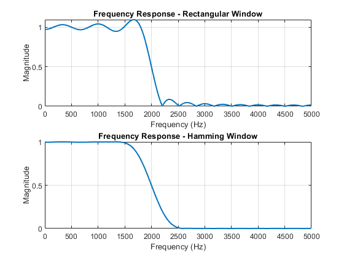

M = 30;
fs = 10000;
fc = 2000;
wc = 2 * pi * fc / fs;
n = 0:M;
ideal_h = sin(wc * (n - M/2)) ./ (pi * (n - M/2));
ideal_h(M/2 + 1) = wc / pi;
rect_window = ones(1, M + 1);
h_rect = ideal_h .* rect_window;
n_window = 0:M;
hamm_window = 0.54 - 0.46 * cos(2 * pi * n_window / M);
h_hamm = ideal_h .* hamm_window;
[H_rect, f_rect] = freqz(h_rect, 1, 1024, fs);
[H_hamm, f_hamm] = freqz(h_hamm, 1, 1024, fs);
figure;
subplot(2, 1, 1);
plot(f_rect, abs(H_rect), 'LineWidth', 1.5);
title('Frequency Response - Rectangular Window');
xlabel('Frequency (Hz)');
ylabel('Magnitude');
grid on;
subplot(2, 1, 2);
plot(f_hamm, abs(H_hamm), 'LineWidth', 1.5);
title('Frequency Response - Hamming Window');
xlabel('Frequency (Hz)');
ylabel('Magnitude');
grid on;
fprintf('Rectangular Window:\n');
measureEdges(H_rect, f_rect, 0.1, 0.1);
fprintf('Hamming Window:\n');
measureEdges(H_hamm, f_hamm, 0.01, 0.01);
function measureEdges(H, f, passband_ripple, stopband_ripple)
magnitude = abs(H);
passband_edge = f(find(magnitude > (1 - passband_ripple), 1, 'last'));
fprintf(' Passband Edge: %.2f Hz\n', passband_edge);
stopband_edge = f(find(magnitude < stopband_ripple, 1, 'first'));
fprintf(' Stopband Edge: %.2f Hz\n', stopband_edge);
cutoff = (passband_edge + stopband_edge) / 2;
fprintf(' Cutoff Frequency (Halfway): %.2f Hz\n', cutoff);
end
Rectangular Window:
Passband Edge: 1850.59 Hz
Stopband Edge: 2148.44 Hz
Cutoff Frequency (Halfway): 1999.51 Hz
Hamming Window:
Passband Edge: 1499.02 Hz
Stopband Edge: 2500.00 Hz
Cutoff Frequency (Halfway): 1999.51 Hz
